WUI is similar to EUI, energy use intensity, which is widely used in benchmarking
building energy usage. As our attention turns more and more to water usage and data
collection increases, WUI will become a powerful tool in building design.
This metric allows you to compare like to like, and to see how your buildings stack up
against other buildings of your saize, use, or region.
Get Started